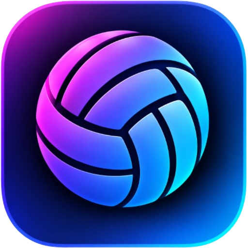

VolleyLumaVolleyLuma предоставляется бесплатно «как есть». Вы отвечаете за материалы, которые записываете и публикуете, в том числе на YouTube — для них действуют Условия использования YouTube. Не используйте программу для нарушения прав других людей.
English. VolleyLuma is provided free of charge “as is”. You are responsible for the content you record and publish, including on YouTube, where the YouTube Terms of Service apply.
Контакты / Contact: epicentrpodolyany1@gmail.com